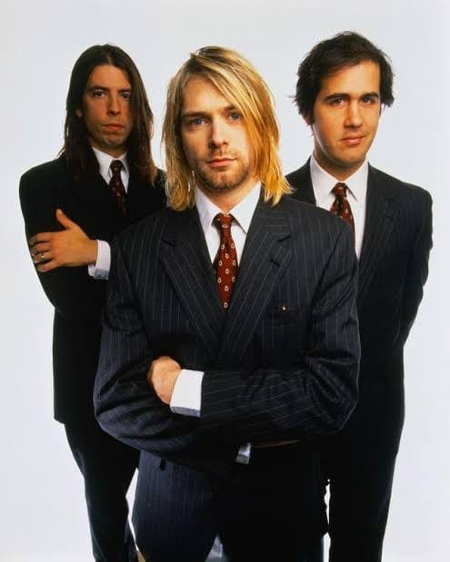
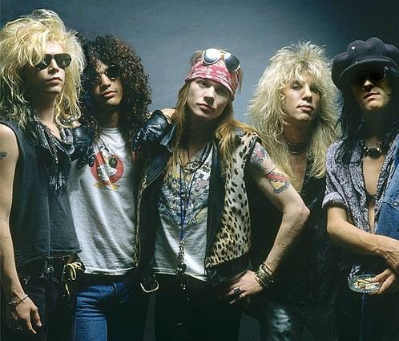
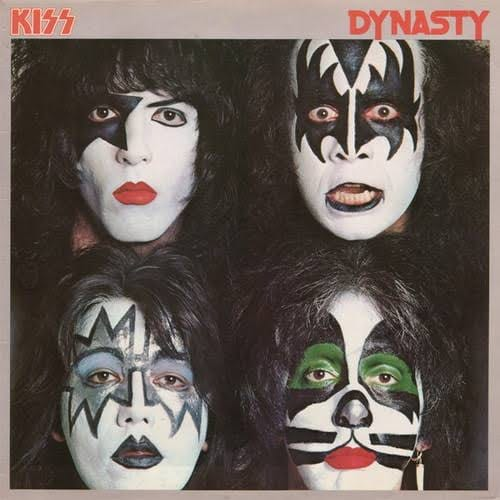

KISS
Conhecido pelas maquiagens marcantes, figurinos extravagantes e shows cheios de energia, o KISS virou um dos grandes símbolos do hard rock.
MUNDO DO ROCK
Uma história de atitude, liberdade e muita música.
Conheça alguns nomes que ajudaram a construir a história do rock.
Conhecido pelas maquiagens marcantes, figurinos extravagantes e shows cheios de energia, o KISS virou um dos grandes símbolos do hard rock.

Com guitarras distorcidas e letras intensas, o Nirvana levou o grunge ao centro da música mundial no início dos anos 1990.

A banda ficou conhecida pela mistura de hard rock, atitude rebelde, riffs marcantes e performances explosivas.

O rock também é feito de encontros, influências e artistas que atravessam gerações.

Capas, discos e músicas ajudaram a transformar bandas em referências culturais.